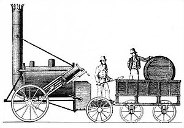
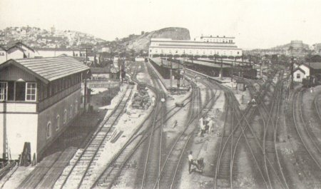
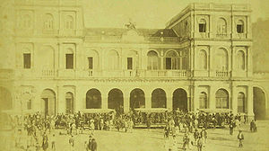

História das ferrovias
A criação das ferrovias
As ferrovias foram uma das primeiras tecnologias que encurtaram a distância percorrida pelo homem. Mesmo antes de sua criação os trilhos já existiam, sendo empregadas em minas e geralmente feitos de madeira, porém o advento das estradas de ferro um grande passo para o futuro foi dado. Ao lado temos uma imagem que exemplifica uma mina de carvão na época da revolução industrial:
Com o surgimento da Primeira Revolução Industrial, necessitou-se ampliar o mercado para intensificação da economia capitalista. As ferrovias e a navegação a vapor derivam dessa necessidade de o capitalismo industrial ampliar seu mercado consumidor e de extração de matéria primas.
As vias férreas surgiram através do impulso proporcionado pela Primeira Revolução Industrial. Já naquela época o foco principal das locomotivas era o transporte de matéria prima até o local onde seriam manufaturadas. Mais tarde elas ganharam também outra função, a de transporte de pessoas que começou a fazer sentido com o agrupamento urbano. Nesse sentido, Wittman (2001) descreve que foi graças a invenção do primeiro veículo a vapor criado por Nicolas Cugnot em 1796 e baseando-se na máquina a vapor de James Watt que as locomotivas foram concebidas anos mais tarde em 1804. Nesse ano, Richard Trevithick combinou a tração a vapor com rolamentos sobre trilhos de ferro criando a primeira locomotiva efetivamente. O trecho de 15 quilômetros de extensão inaugurado no país de Gales serviu para o transporte de minério, porém não foi considerado um sucesso comercial em decorrência do peso excessivo. Uma locomotiva em específico foi responsável pela popularização dos trens: a Rocket (foguete), criada em 1814 por George Stephenson. Além de ser considerada a primeira locomotiva que puxou vagões com passageiros, também foi escolhida para fazer o trajeto entre Liverpool e Manchester, a principal ferrovia da época. Abaixom temos uma desenho comtemporâneo da locomotiva Rocket:
Com o tempo essa tecnologia se difundiu na Europa, começando pela Inglaterra, o berço da Revolução Industrial e mais tarde espalhou-se por todo o mundo onde ganhou a fama de ser rápido, eficiente e seguro. Em pouco tempo tornou-se um dos meios de transporte mais utilizados no mundo, com o avanço tecnológico de algumas economias, que investindo na melhoria de ferrovias e locomotivas, criaram um crescente econômico.
Ao redor do mundo, as primeiras ferrovias se caracterizavam pelo transporte principalmente de minérios, entre eles, o carvão. Exemplo disso estavam as ferrovias da Inglaterra e as dos Estados Unidos em seu princípio. Pois o motor a vapor movimentava todas as indústrias. Para colocá-lo em funcionamento eram necessários esforços coletivos que começavam horas antes do trem estar em movimento, com diversos funcionários esquentando o fogo que aquecia a caldeira e transformava a água em vapor.
História das ferrovias no Brasil
Em 1835 foram criadas as primeiras concessões e leis a respeito das estradas de ferro em território brasileiro, porém, somente após 20 anos as locomotivas iniciariam a circulação com a criação da linha Mauá.
A partir de 1820, começou a ocorrer no Brasil uma profunda transformação econômica com o advento do ciclo do café, e foi exatamente o café o principal responsável pela necessidade de estradas de ferro. O café, quando atingiu o Vale do Paraíba do Sul, por volta de 1830, passou a exigir, cada vez mais, melhores transportes terrestres, porque as distâncias e as quantidades transportadas eram também cada vez maiores.
Anteriormente ao café, as mercadorias transportadas pelo país não necessitavam de transporte ferroviário, porque ou se davam a curtas distâncias, ou eram suficientemente bem atendidas com meios de transporte mais simples, tanto pelo baixo peso ou volume. Portanto, o crescimento econômico através do café necessitou de trens para transportar o produto, proporcionando em contrapartida, a expansão das fazendas dos cafeicultores. Entretanto, as ferrovias do sul do Brasil não foram constituídas para atender os latifúndios do café, e sim como forma de integração do mercado interno. Dessa forma, o sul do país passou a interligar os mercados com as regiões produtoras.
A Estrada de Ferro Mauá, a primeira do Brasil, criada em 1854 pelo Barão de Mauá, não foi um sucesso e, desde sua criação, já se esperava o baixo retorno econômico que essa linha férrea traria devido a péssima localização, mesmo depois de ser estendida até Petrópolis. Abaixo temos uma imagem da linha Mauá recentementte inaugurada:

Contudo alguns anos depois outra linha férrea ganhou destaque no Brasil: A Estrada de Ferro D. Pedro II, considerada o mais importante projeto ferroviário criado no Brasil e, mesmo ela enfrentou problemas de contrato e péssima mão de obra. Abaixo temos uma foto da estação central da estrada de ferro Dom Pedro II:

Percebe-se que por conta do contrato um grande prejuízo inicial foi criado, pois o próprio empreiteiro aproveitava-se dele para proveito próprio. Contudo, casos semelhantes ao ocorrido na D. Pedro II se repetiram ao longo de toda história do Brasil Império e geraram gargalos crônicos nesse setor. Dentre eles, podemos citar a falta de planejamento das linhas, que só satisfaziam as necessidades da época, a falta de participação brasileira ativa nos projetos, a utilização de variadas bitolas sem manter um padrão, dificultando futuras integrações e a dependência da importação de todo o material das ferrovias (principalmente do ferro, que era em geral de origem inglesa), devido à ausência de uma siderúrgica nacional.
Aqui temos uma tabela das principais ferrovias histórias e a respectiva data de inauguração das mesmas:
| Nome da Ferrovía | Data de Inauguração |
| Barão de Mauá(RJ) | 30/04/1854 |
| Recife ao São Francisco(PE) | 08/02/1858 |
| D. Pedro II – Central do Brasil(RJ) | 29/03/1858 |
| Bahia ao São Fracisco(BA) | 28/06/1860 |
| Santos a Jundiaí(SP) | 16/02/1867 |
| Companhia Paulista(SP) | 11/08/1872 |